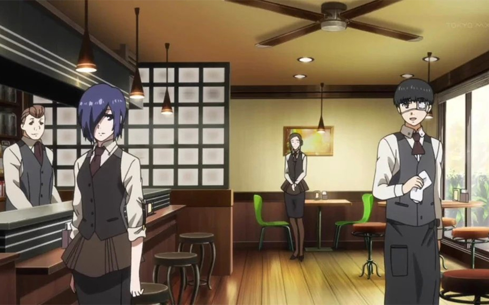

AnteikuCafee
Tempat ngopi dengan nuansa klasik dan damai, terinspirasi dari budaya kedai Jepang. Rasakan ketenangan dalam setiap tegukan.
Tempat ngopi dengan nuansa klasik dan damai, terinspirasi dari budaya kedai Jepang. Rasakan ketenangan dalam setiap tegukan.
Didirikan pada tahun 2015, AnteikuCafee terinspirasi dari kedai fiksi legendaris dalam budaya pop Jepang. Dimulai dari sebuah sudut kecil di pusat kota, tempat ini menjadi tempat pelarian bagi para pecinta kopi, pembaca buku, dan pencari ketenangan. Filosofi kami adalah “melayani dengan hati dan memberi ruang untuk damai.” Interior klasik kami dan aroma kopi segar telah menjadi ciri khas yang tak tergantikan.
